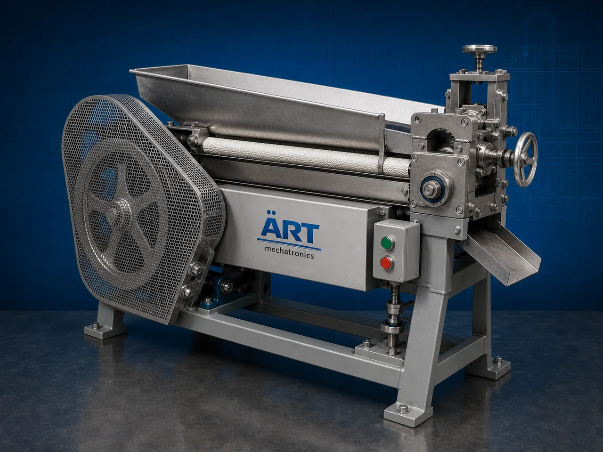

Traditional Cutter Machine (Industrial Mechanical Cutting System)
A Traditional Cutter Machine, also known as a Mechanical Cutter Machine, Conventional Cutting Machine, Industrial Traditional Cutter, or Heavy Duty Material Cutter, is a robust industrial processing solution designed for cutting, slicing, chopping, breaking, trimming, size reduction, and continuous material processing operations across food processing, supari processing, spices, herbs, plastic, rubber, wood, agro products, and industrial manufacturing industries.

About the Traditional Cutter
Traditional cutter systems are widely used for:
- Supari cutting operations
- Spice and herb cutting
- Food slicing and chopping
- Agro product processing
- Plastic and rubber cutting
- Material size reduction
- Industrial trimming operations
- Continuous production line cutting
The machine improves:
- Cutting efficiency
- Product uniformity
- Production capacity
- Material handling speed
- Labor reduction
- Industrial durability
- Processing consistency
Industrial traditional cutter machines use:
- Heavy-duty mechanical cutting systems
- Industrial hardened cutting blades
- Motorized drive systems
- Precision feeding mechanisms
- Rugged industrial construction
to automatically process and cut materials with reliable performance and high industrial productivity.
Traditional cutter machines are widely used in industries such as:
Food processing industries Supari processing industries Spice processing industries Agro industries Plastic industries Rubber industries Wood industries Industrial manufacturing industries
where durable cutting systems, continuous operation, and heavy-duty processing are essential.
The machine is highly suitable for:
- Supari cutting operations
- Spice and herb processing
- Food chopping applications
- Agro material processing
- Industrial material size reduction
- Heavy-duty production line operations
ART Mechatronics offers high-performance traditional cutter machines, engineered for continuous industrial operation, rugged cutting performance, reliable processing efficiency, and long-term industrial durability.
Working Principle of Traditional Cutter Machine
- 1. Material Feeding & Loading Raw materials are manually or automatically fed into cutting section for processing operation.
- 2. Material Positioning & Blade Alignment Process Machine automatically aligns materials against heavy-duty cutting blades before cutting operation.
Mechanical synchronization ensures stable material movement and accurate cutting operations.
- 3. Cutting Operation Machine handles cutting of: ✔ Supari ✔ Spices ✔ Herbs ✔ Dry fruits ✔ Plastic materials ✔ Rubber sheets ✔ Agro products ✔ Industrial materials
accurately and continuously.
- 4. Mechanical Cutting & Size Reduction Process Machine performs: Cutting Chopping Slicing Breaking Trimming Material size reduction
for efficient industrial processing operations.
- 5. Intelligent Automation & Safety Integration Optional systems include: Automatic feeding systems Safety guarding systems Dust extraction systems Variable speed controls Industrial motor protection systems
- 6. Finished Product Discharge Processed materials discharged automatically for: Further processing Drying operations Packaging operations Warehouse storage Export shipment handling
Types of Traditional Cutter Machines
- 1. Supari Traditional Cutter Machine Designed for: ✔ Betelnut cutting and processing applications
- 2. Spice & Herb Cutter Machine Suitable for: ✔ Spice processing and agro product cutting systems
- 3. Food Traditional Cutter Machine Uses: ✔ Food slicing and chopping operations
- 4. Plastic & Rubber Cutter Machine Designed for: ✔ Industrial material processing operations
- 5. Heavy Duty Mechanical Cutter Machine Suitable for: ✔ Continuous industrial cutting operations
- 6. Fully Automatic Traditional Cutting System Designed for: ✔ Complete industrial processing automation lines
Industries Using Traditional Cutter Machines
🌰 Supari Processing Industry Betelnut cutting, slicing, and industrial supari processing systems. 🌶️ Spice Processing Industry Turmeric, chilli, herbs, and spice cutting operations. 🍅 Food Processing Industry Dry fruits, vegetables, snacks, and industrial food cutting systems. ⚙️ Plastic & Rubber Industry Industrial material trimming and size reduction systems. 🌾 Agro Industry Seeds, biomass, herbs, and agricultural product processing operations. 🛒 FMCG Industry Food ingredient preparation and industrial processing systems.
Features & Advantages
- Heavy-duty industrial cutting operation
- Accurate and uniform material cutting systems
- Rugged mechanical construction for long-term durability
- High production efficiency and continuous operation
- Improves material processing consistency
- Reduces manual cutting dependency
- Supports multiple industrial materials and products
- Reliable long-term industrial performance
- Smooth integration with industrial production lines
Technical Highlights
Machine Type: Traditional cutter machine Mechanical cutting system Industrial material cutter Material Compatibility: Supari Spices Herbs Dry fruits Plastic materials Rubber sheets Industrial agro products Integration: Motorized cutting systems Automatic feeding systems Industrial safety systems Dust extraction systems Features: Heavy-duty cutting blades Variable speed controls Industrial motor systems Rugged steel construction Continuous duty operation Applications: Supari cutting Spice processing Food slicing Industrial trimming Material size reduction Agro product processing Automation: Semi-automatic Fully automatic industrial systems
Turnkey Traditional Cutting Solutions
ART Mechatronics offers: Complete industrial cutting systems Automatic material processing solutions Heavy-duty industrial automation systems Production line integration systems Installation & commissioning After-sales service & AMC
Why Choose Art Mechatronics
Expertise in industrial processing and automation systems Customized cutting solutions for multiple industries High-performance and rugged cutting technology Reliable industrial machinery engineering Proven industrial processing performance across sectors
Applications
Supari Processing Plants Spice Manufacturing Facilities Food Processing Industries Plastic & Rubber Processing Units Agro Product Processing Plants Industrial Manufacturing Industries
Related Process Equipment machines
Get pricing & specs for the Traditional Cutter
Share the product, target capacity, current process and plant location. These details help our engineers discuss the right machine or line configuration.
One partner, from design to start-up
ART Mechatronics designs, manufactures, installs and commissions your Traditional Cutter solution with regional presence in India, UAE and Thailand.